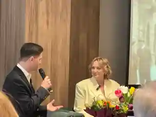
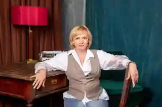
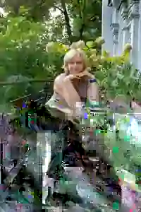
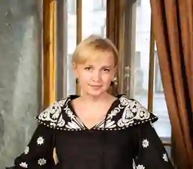

MEDIA & EVENTS
The author in conversation with readers
A gallery of author portraits, book presentations and moments from the life of the novel Remember Who You Are.

These moments reflect the public life of the book — presentations, conversations, portraits and meetings with readers. Over time, this page can also include interviews, articles, event announcements and press mentions.




